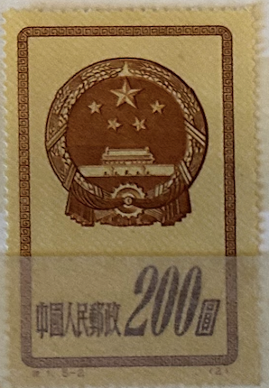
| SOURCE | TITLE| IMAGE MATCH | click to source page |
| www.ebay.com | China, People's Republic of Scott #118 Used PRC | eBay | 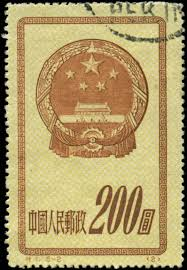 |
| www.ebay.com | China (PR) #118 used | eBay | 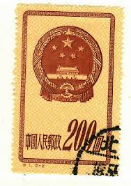 |
| www.hipstamp.com | China-1951-Sc#117-121-National Emblem MNH VF Rare WE Ship to ... | 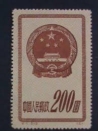 |
| www.shutterstock.com | China Circa 1950 Stamp Printed By Stock Photo 34686073 ... | 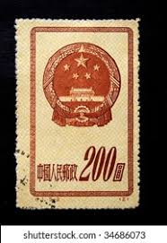 |
| www.xabusiness.com | S1 Scott 117-121 National Emblem - China Stamps | 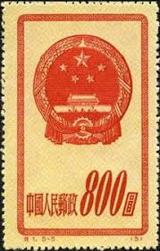 |
| www.ebay.com | china - pr 121 no gum as issued - no faults very fine! - rod | 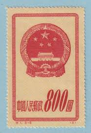 |
| www.alamy.com | CHINA - CIRCA 1951: A stamp printed in China shows National ... | 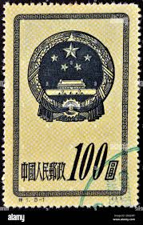 |
| www.hipstamp.com | China-1951-Sc#121 -National Emblem With Border MNH VF WE ... | 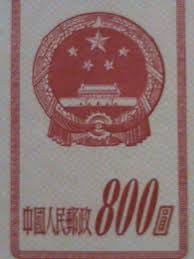 |
| www.ebay.com | CHINA P.R.C. SC# 118 REPRINTS - MNH | eBay | 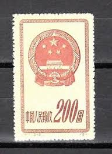 |
| touchstamps.com | Stamp: National Emblem (China, People's Republic 1951 ... | 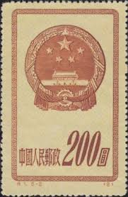 |
| en.numista.com | 2000 Yuan (Year of the Snake) - People's Republic of China ... |  |
| www.hipstamp.com | China, Peoples Republic, 1951, National Emblem, 400$, unused ... |  |
| www.jacestamps.com | PR China Stamps | 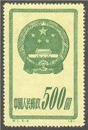 |
| findyourstampsvalue.com | Commemorate 10th anniversary of the Proclamation of the ... | 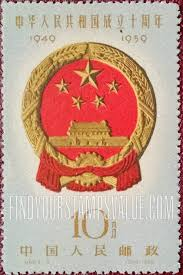 |
| www.instagram.com | China, Peoples Republic, 1951, National Emblem, 200$ |  |
| en.wikipedia.org | Law of the People's Republic of China on the National Emblem ... | 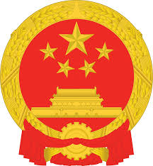 |
| www.carousell.sg | China Stamps C68 CTO NH, Hobbies & Toys, Memorabilia ... | 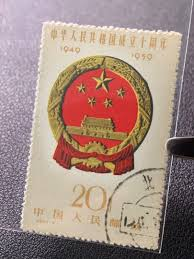 |
| www.shutterstock.com | Ukraine Circa 2017 Postage Stamp Printed Stock Photo ... | 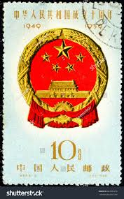 |
| www.hobbyofkings.com | China 5 Jiao Coin KM336 1991 - 2001 | 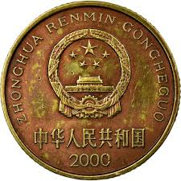 |
| www.facebook.com | What is the history of the Postes Persanes stamp? | 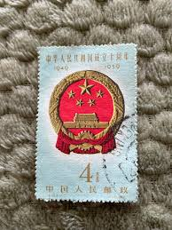 |
| us-china-stamps.com | The China (PRC) Old Special (S) Stamps 老特种邮票: S1 to S75 ... | 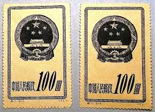 |
| www.hipstamp.com | China, Peoples Republic, 1951, National Emblem, 200$, used ... | 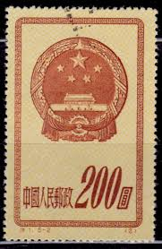 |
| margipood.ee | c-1 1951 - Margipood | 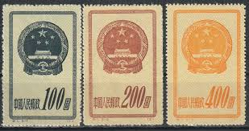 |
| en.numista.com | 5 Yuan (Mount Emei and Leshan Giant Buddha) - People's ... | 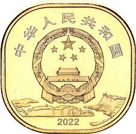 |
| picclick.co.uk | THE PEOPLE'S REPUBLIC Of China Postage Stamps 1993 - Besfond ... |  |
| www.tradera.com | Se produkter som liknar Kina 1951 - 200 dollar.* på Tradera ... | 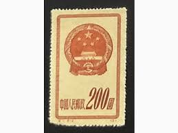 |
| www.ebay.com | 56793 China Stamp 1959 4c UNH Beautiful Stamp Coll SP* | eBay |  |
| www.xabusiness.com | J45 Scott 1500-01 30th anniv. of Founding of PRC (2nd Set ... | 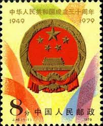 |
| www.hipstamp.com | China -Stamps-1951-S1-Sc#117-121 National Emblems, Cto- NH ... | 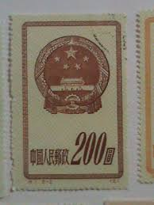 |
| art.people.com.cn | 央行将发行金银纪念币一套共16枚【9】--艺术收藏--人民网 | 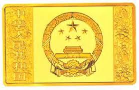 |
| www.ngccoin.com | China, People'S Republic 300 Yuan KM 37 Prices & Values | NGC | 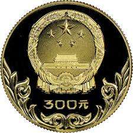 |
| tw.bid.yahoo.com | 嚴選紀68建國新票全體郵票，源泰嚴選FVF90完美Condition，推薦 ... | 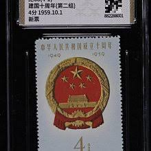 |
| commons.wikimedia.org | File:中华人民共和国国徽图案.jpg - Wikimedia Commons | 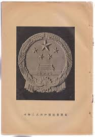 |
| lori.ru | Герб Китайской Народной Республики. Почтовая марка Китая ... | 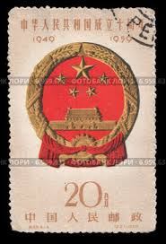 |
| www.coinsnb.com | 5 Yuan (Great Wall) 2002 (BU) - China | Coins NB - Auction ... | 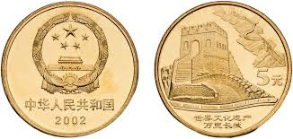 |
| www.etsy.com | Coat of Arms of China, Flag of China, Emblem of China - Etsy | 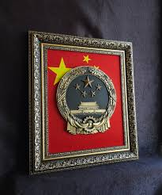 |
| www.china.org.cn | National Flag, National Emblem and National Anthem | 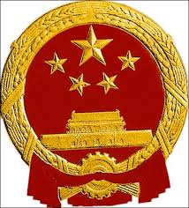 |
| www.istockphoto.com | Peoples Republic Of China National Emblem Isolated On White ... |  |
| brstamp.com | 特1 国徽1951.10.1. – 左氏珍藏 | 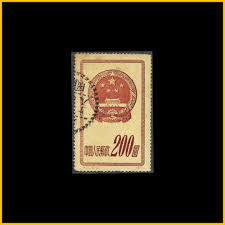 |
| www.redbubble.com | "National Emblem of the People's Republic of China - National ... | 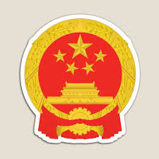 |
| www.carousell.com.hk | 新中國郵票-1951年中國人民郵政發行國徽(舊人民幣)200圓郵票 ... | 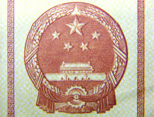 |
| www.ngccoin.com | China, People'S Republic 100 Yuan KM 211 Prices & Values | NGC | 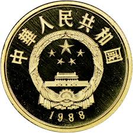 |
| www.stampexindia.com | CHINA REPUBLIC 1951-National Emblem, 1 Value,MNH, S.G. 1520 ... | 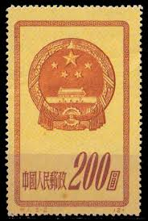 |
| www.istockphoto.com | Chinese Stamps Peoples Republic Of China National Emblem ... | 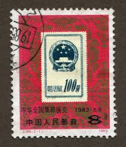 |
| www.hipstamp.com | China -Stamps-1951-Sc#119-21 National Emblem Stamp: MNH Set ... | 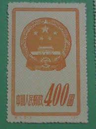 |
| en.numista.com | 100 Yuan (Emperor Huang Di) - People's Republic of China ... | 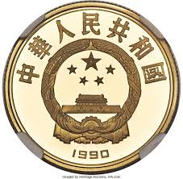 |
| en.wikipedia.org | National emblem of China - Wikipedia | 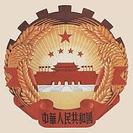 |
| www.518yp.com | 大盘点那些国庆题材的邮票,图片,价格,收藏 | 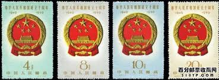 |
| mkcoins.com | 1986 - China - 5 Yuan - World Wildlife Fund – MK Coins | 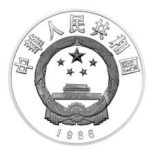 |
| newsletter.npcobserver.com | September 2024: Retirement Age, Military Training & Economic ... | 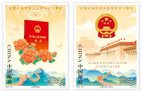 |
| www.anumis.ru | Марка почтовая «Национальный герб» Scott 118 1951. Китай ... | 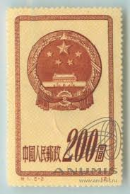 |
| commons.wikimedia.org | File:Emblem of China Draft THU 1950-6-17.jpg - Wikimedia Commons | 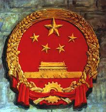 |
| www.instagram.com | In 1949, with the founding of the People's Republic of China ... |  |
| www.dreamstime.com | National emblem, China stock image. Image of stately - 12940675 | 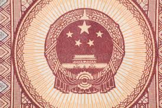 |
| violity.com | Марки 1959 Китай 10 лет КНР Герб КНР (109941254) - купить на ... | 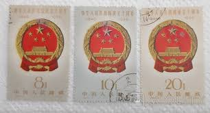 |
| www.freestampcatalogue.com | Stamps from China People's Republic - Freestampcatalogue.com ... | 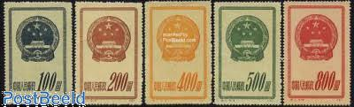 |
| chineseposters.net | The national emblem of the People's Republic of China ... | |
| worldstampsproject.org | People's Republic of China – varieties of postage stamps ... | |
| www.ebay.com | CHINA - 2 USED STAMPS - NATIONAL EMBLEM - COAT OF ARMS ... |
{kind=link}
{kind=link}